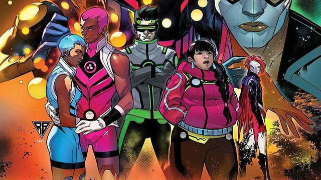

I just finished watching Season one of The Witcher today, which was available on Netflix in December and I
surprisingly enjoyed it. I was excited to watch it after I saw the trailer. It showed me a lot of potential. Now
there is going to be a lot of fantasy shows after GoT ended several months ago. A lot of fantasy shows such as
the
Lord of the Rings, The Wheel of Time, and The Witcher are rising up to take the mantle. Now it’s The Witcher’s
time
to shine.
I was actually excited to watch The Witcher over my break. When I finally watched the first episode, I found
myself
getting bored and uninterested. I gave it a second chance because the second episode introduced a new character
with
an interesting backstory, but I even found that episode lackluster. It wasn’t until the third episode where
things
really took off. The suspense went up after the third episode, and the energy carried on into the season finale.
The main flaws of this show was the story telling. There are three time lines in this show – they do eventually
converge- and it is confusing. Not only are there three different time lines but the show likes to hop back and
forth from the future and the past without giving the audience any warning. Some times I felt like I was missing
something, and I had to look up stuff in the internet to understand what was going on and to see if any one else
understood. I have never delved into any of The Witcher media before – I did recently buy the game, Witcher 3:
The
Wild Hunt – so that made my experience more confusing. To be 100% understanding the show isn’t rocket science.
It
does make sense, but I don’t understand why the writers would till the story like that.
The story was fun. Especially the bounty huntings arcs. Each episode felt different but they were all
interconnected
and told a big over arcing story. The action is fun too watch especially the mage battle in the season finale.
The
characters were also good. I liked Geralt’s and Yennefer’s stories the best. Yennefer’s story could’ve been
fleshed
out more. It was totally rushed at points.
I’m honestly surprised that I finished this show in one week. I was originally planning not to finish the show
after
the first episode, but there was a lot intrigue that was pulling me back into watching it. Now I got to beat the
video game…
Blog #3: Marvel Comics and Failed Diversity
Marvel comics have been getting a lot of hate lately on their diversity tactics they have taken in their comics.
Now,
I’m all for diversity. I like to see more of it, but it should be done right. Don’t replace legacy characters
with
cheaper feeling characters. This feels like weak writing and not genuine. I’m a brown male and I would love to
see
an Indian superhero comic, but if it’s written poorly, why would I bother paying money to read it? Quality and
innovation need to be the focus of these comic book publisher. If Marvel’s going to diversify their roster, they
should do it right, but once again they failed…epically.

Cheap characters and Cheap designs. Zero effort.
Marvel updated the new warriors roster for 2020, and it’s cringe inducing. The problems with these characters is
that
they feel like they are like caricatures of how Marvel thinks gen-z kids act like. One teen hero’s name is
Screentime for example. Like why? Can we just have good characters and a good story instead of all these cheap
1-dimensional garbage? These characters that are based off generational trends will die off and be long
forgotten in
a few years. If you think Screentime is a dumb name, wait till you read the bio:
"A Meme-Obsessed super teen whose brain became connected to the internet after becoming exposed to his
grandfather’s “experimental internet gas.” Now he can see augmented reality and real-time maps, and can instantly
Google any fact."
What in the … what?? What in the world is experimental internet gas? He can google any fact. Cool. How is that a super
power? Every member of this team is terrible and has little to no substance. These characters will be forgotten in 3
years tops.
This book’s roster has a lot of terrible characters, but nothing can top the 2 pro LGBTQ+ characters: Safespace and
Snowflake. Snowflake is non-binary, and Safespace is … who even know or cares. And yes, their names are Safespace
and Snowflake. The writer must have no idea what he is doing. This was yet another move Marvel to promote diversity
and to be seen as heroes in the industry, but this is pathetic. Not even SJWs on twitter like this move by Marvel. I
don’t even understand why Marvel even panders to SJWs. SJWs are not Marvel’s main audience. Marvel needs to focus on
their actual readership base instead of what crazy people are saying on twitter.